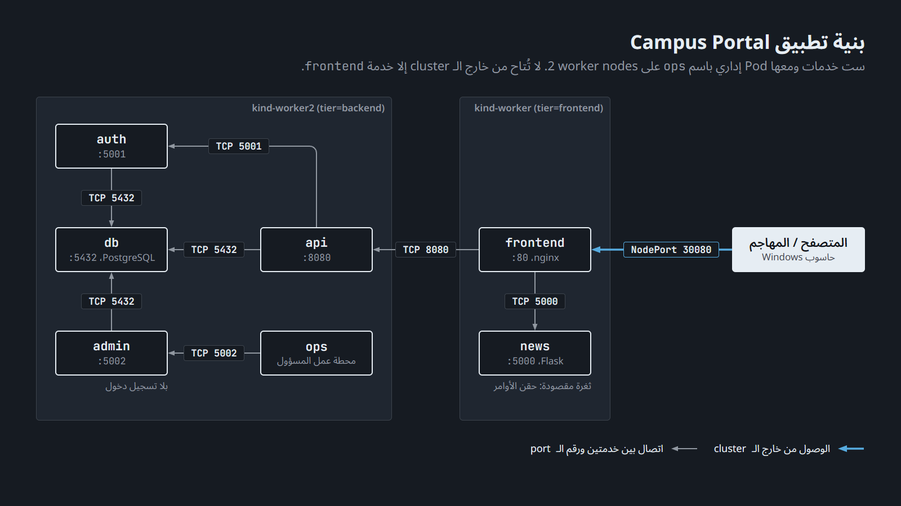

الفصل 6. نشر البوابة
في نهاية هذا الفصل ستعمل بوابة الحرم الجامعي (Campus Portal) على الـ cluster الذي بنيناه، بسبعة Pods موزعة على الـ worker nodes الاثنتين. وسيؤكد لنا سكربت (Script) أن الطلاب الحقيقيين ما زالوا قادرين على تسجيل الدخول وقراءة درجاتهم، ثم ندخل بأنفسنا باسم سارة من المتصفح في Windows. نخصص لهذا الفصل ساعتين إلى ثلاث ساعات. يذهب معظم هذا الوقت إلى قراءة ملف طويل واحد هو k8s/app.yaml، لأن كل فصل لاحق يعود إليه.
الخطوة 1. التأكد من أن الـ cluster ما زال يعمل
لا بد أن يكون الـ cluster الذي بنيناه في الفصل 4 قيد التشغيل قبل أن نضع عليه أي شيء. وقد يكون متوقفاً بعد إعادة تشغيل Windows، وأمر واحد يكشف لنا حاله.
نفتح الـ terminal في Ubuntu.
kubectl get nodes -L tierيعرض kubectl get nodes الـ nodes في الـ cluster. ويضيف -L tier عموداً يُظهر قيمة الـ label tier لكل node، وهو الـ label الذي يحدد الـ nodes التي يُسمح للـ Pods أن تعمل عليها.
ما يجب أن نراه: 3 nodes.
NAME STATUS ROLES AGE VERSION TIER
kind-control-plane Ready control-plane 5m14s v1.36.4
kind-worker Ready <none> 5m v1.36.4 frontend
kind-worker2 Ready <none> 5m v1.36.4 backendيجب أن تظهر الكلمة Ready في عمود STATUS في كل سطر. وفي عمود TIER يجب أن تظهر القيمة frontend أمام kind-worker والقيمة backend أمام kind-worker2، أمّا kind-control-plane فليست لها فئة (Tier) ويبقى حقلها فارغاً. ويعرض عمود AGE المدة التي مضت منذ بناء الـ cluster، لذلك ستختلف قيمته على حاسوبنا عن المثال.
إذا ظهر شيء آخر
The connection to the server 127.0.0.1:37645 was refused - did you specify the right host or port?إذا ظهرت هذه الرسالة فالسبب أن containers الـ nodes الثلاث متوقفة. يحدث هذا بعد إعادة تشغيل Windows أو بعد إغلاق Ubuntu، وسيختلف رقم الـ port على الشاشة عن المثال. نشغّل الـ nodes من جديد بالأمر docker start kind-control-plane kind-worker kind-worker2، وننتظر دقيقة واحدة، ثم نعيد تشغيل kubectl get nodes -L tier.
إذا ظهرت إحدى الـ nodes بالحالة NotReady فالسبب أن Cilium لم يكتمل تشغيله على تلك الـ node بعد. نشغّل cilium status --wait، وهو ينتظر حتى تظهر OK أمام كل جزء من Cilium، ثم نفحص الـ nodes مرة أخرى.
إذا كان عمود TIER فارغاً أمام kind-worker أو kind-worker2 فالسبب أن الـ cluster أُنشئ من دون الـ labels الموجودة في kind-config.yaml، وعندها سينتظر كل Pod في هذا الفصل إلى الأبد لأنه لا يجد مكاناً يذهب إليه. نضيف الـ labels يدوياً بالأمر kubectl label node kind-worker tier=frontend ثم kubectl label node kind-worker2 tier=backend.
الخطوة 2. كتابة k8s/app.yaml
الملف k8s/app.yaml ملف توصيف (Manifest)، وهو ملف نصي يصف الكائنات التي نريد وجودها، ويظل Kubernetes يعمل حتى يطابق ما يجري في الـ cluster محتوى الملف. ويصف البوابة كلها في 14 كائناً: كائن Secret واحد، وستة كائنات Service، وسبعة كائنات Deployment.
الملف مكتوب بصيغة YAML، وهي صيغة نصية تدل فيها الإزاحة على تبعية كل سطر لما فوقه. كل مستوى يُزاح بمسافتين، ولا يُسمح بمحرف الجدولة (Tab) إطلاقاً، فمحرف جدولة واحد في أي مكان يُفسد الملف كله. والسطر الذي يبدأ بـ - عنصر واحد من قائمة. وفي هذا الملف تقف عناصر القائمة على مستوى إزاحة المفتاح الذي فوقها، كما في ports: يليه - port: 5000، وهذا صحيح. أمّا السطر الذي لا يحوي إلا --- فيُنهي كائناً ويبدأ الذي بعده، وبهذا يتسع ملف واحد لـ 14 كائناً.
في Ubuntu terminal ننشئ المجلد ونفتح ملفاً جديداً فارغاً في VS Code.
mkdir -p ~/microseg/k8s
code ~/microseg/k8s/app.yamlينشئ mkdir -p ~/microseg/k8s المجلد k8s داخل مشروعنا، ويجعله الخيار -p يمضي بصمت إذا كان المجلد موجوداً أصلاً. ويفتح code الملف في VS Code، فيُنشأ الملف عند أول حفظ.
ما يجب أن نراه: يفتح VS Code تبويباً فارغاً اسمه app.yaml، ولا يظهر أي ناتج في الـ terminal. نلصق فيه الملف الآتي ونحفظه بـ Ctrl+S. ثم نتأكد أن شريط الحالة أسفل يمين نافذة VS Code يُظهر LF، كما في الفصل 2.
# Campus Portal. Order: Secret, then all Services, then all Deployments.
# Services come first so every pod gets the *_SERVICE_PORT env vars (used in attack step 2).
apiVersion: v1
kind: Secret
metadata:
name: db-credentials
namespace: campus
type: Opaque
stringData:
POSTGRES_USER: postgres
POSTGRES_PASSWORD: postgres # vendor default ON PURPOSE (attack step 3)
POSTGRES_DB: campus
---
apiVersion: v1
kind: Service
metadata:
name: frontend
namespace: campus
spec:
type: NodePort
externalTrafficPolicy: Local # keep the client IP, so Cilium sees it as "world"
selector:
app: frontend
ports:
- port: 80
targetPort: 80
nodePort: 30080
---
apiVersion: v1
kind: Service
metadata:
name: news
namespace: campus
spec:
selector:
app: news
ports:
- port: 5000
targetPort: 5000
---
apiVersion: v1
kind: Service
metadata:
name: api
namespace: campus
spec:
selector:
app: api
ports:
- port: 8080
targetPort: 8080
---
apiVersion: v1
kind: Service
metadata:
name: auth
namespace: campus
spec:
selector:
app: auth
ports:
- port: 5001
targetPort: 5001
---
apiVersion: v1
kind: Service
metadata:
name: db
namespace: campus
spec:
selector:
app: db
ports:
- port: 5432
targetPort: 5432
---
apiVersion: v1
kind: Service
metadata:
name: admin
namespace: campus
spec:
selector:
app: admin
ports:
- port: 5002
targetPort: 5002
---
apiVersion: apps/v1
kind: Deployment
metadata:
name: frontend
namespace: campus
spec:
replicas: 1
selector:
matchLabels:
app: frontend
template:
metadata:
labels:
app: frontend
spec:
nodeSelector:
tier: frontend
containers:
- name: frontend
image: nginx:1.28
ports:
- containerPort: 80
readinessProbe:
httpGet:
path: /healthz
port: 80
volumeMounts:
- name: files
mountPath: /etc/nginx/conf.d/default.conf
subPath: default.conf
- name: files
mountPath: /usr/share/nginx/html/index.html
subPath: index.html
volumes:
- name: files
configMap:
name: frontend-files
---
apiVersion: apps/v1
kind: Deployment
metadata:
name: news
namespace: campus
spec:
replicas: 1
selector:
matchLabels:
app: news
template:
metadata:
labels:
app: news
spec:
nodeSelector:
tier: frontend
automountServiceAccountToken: false # the attacker gets no Kubernetes API token
containers:
- name: news
image: campus-news:1.0
imagePullPolicy: Never
command: ["gunicorn", "--bind", "0.0.0.0:5000", "--workers", "2", "news:app"]
ports:
- containerPort: 5000
readinessProbe:
httpGet:
path: /healthz
port: 5000
---
apiVersion: apps/v1
kind: Deployment
metadata:
name: api
namespace: campus
spec:
replicas: 1
selector:
matchLabels:
app: api
template:
metadata:
labels:
app: api
spec:
nodeSelector:
tier: backend
containers:
- name: api
image: campus-app:1.0
imagePullPolicy: Never
command: ["gunicorn", "--bind", "0.0.0.0:8080", "--workers", "2", "api:app"]
envFrom:
- secretRef:
name: db-credentials
ports:
- containerPort: 8080
readinessProbe:
httpGet:
path: /healthz
port: 8080
---
apiVersion: apps/v1
kind: Deployment
metadata:
name: auth
namespace: campus
spec:
replicas: 1
selector:
matchLabels:
app: auth
template:
metadata:
labels:
app: auth
spec:
nodeSelector:
tier: backend
containers:
- name: auth
image: campus-app:1.0
imagePullPolicy: Never
command: ["gunicorn", "--bind", "0.0.0.0:5001", "--workers", "2", "auth:app"]
envFrom:
- secretRef:
name: db-credentials
ports:
- containerPort: 5001
readinessProbe:
httpGet:
path: /healthz
port: 5001
---
apiVersion: apps/v1
kind: Deployment
metadata:
name: db
namespace: campus
spec:
replicas: 1
selector:
matchLabels:
app: db
template:
metadata:
labels:
app: db
spec:
nodeSelector:
tier: backend
containers:
- name: db
image: postgres:17
envFrom:
- secretRef:
name: db-credentials
ports:
- containerPort: 5432
readinessProbe:
exec:
command: ["pg_isready", "-h", "127.0.0.1", "-U", "postgres"]
volumeMounts:
- name: init
mountPath: /docker-entrypoint-initdb.d
volumes:
- name: init
configMap:
name: db-init
---
apiVersion: apps/v1
kind: Deployment
metadata:
name: admin
namespace: campus
spec:
replicas: 1
selector:
matchLabels:
app: admin
template:
metadata:
labels:
app: admin
spec:
nodeSelector:
tier: backend
containers:
- name: admin
image: campus-app:1.0
imagePullPolicy: Never
command: ["gunicorn", "--bind", "0.0.0.0:5002", "--workers", "2", "admin:app"]
envFrom:
- secretRef:
name: db-credentials
ports:
- containerPort: 5002
readinessProbe:
httpGet:
path: /healthz
port: 5002
---
apiVersion: apps/v1
kind: Deployment
metadata:
name: ops
namespace: campus
spec:
replicas: 1
selector:
matchLabels:
app: ops
template:
metadata:
labels:
app: ops
spec:
nodeSelector:
tier: backend
terminationGracePeriodSeconds: 1 # sleep ignores the stop signal, don't wait 30 s
containers:
- name: ops
image: campus-app:1.0
imagePullPolicy: Never
command: ["sleep", "infinity"]تمر بقية الخطوة على الملف كائناً كائناً. نُبقي الملف مفتوحاً بجانبنا.
كائن Secret
كائن Secret مخصص في Kubernetes لكلمات المرور والمفاتيح. تستطيع الـ Pods أن تقرأ قيمه على شكل متغيرات بيئة (Environment variables)، من دون أن تُكتب كلمة المرور في كل Deployment.
stringData:
POSTGRES_USER: postgres
POSTGRES_PASSWORD: postgres # vendor default ON PURPOSE (attack step 3)
POSTGRES_DB: campus(1) تحت stringData نكتب القيم نصاً عادياً. يعرضها Kubernetes بترميز base64، وهو ترميز يستطيع أي شخص عكسه، ويحفظها افتراضياً غير مشفرة في قاعدة بياناته. فالـ Secret يُبعد كلمة المرور عن ملفاتنا الأخرى، لكنه لا يوفر أي تشفير على الإطلاق.
(2) الأسماء الثلاثة هي التي تقرؤها الـ container image الرسمية postgres:17 عند تشغيلها أول مرة. فتنشئ المستخدم postgres بكلمة المرور postgres، وقاعدة بيانات فارغة اسمها campus.
(3) كلمة المرور هي كلمة المرور الافتراضية المعروفة لـ PostgreSQL، واخترناها عن قصد. ففي الفصل 8 يخمّنها المهاجم في الخطوة 3. ولا يصل هذا الـ Secret إلى Pod الخدمة news أبداً، لذلك يضطر المهاجم إلى التخمين.
كائنات Service
يمنح كائن Service مجموعةً من الـ Pods اسماً واحداً وعنواناً ثابتاً. ومن دونه يحتاج كل طرف يتصل بها إلى معرفة عنوان IP الحالي للـ Pod، وهذا العنوان يتغير كلما استُبدل الـ Pod. خمسة من كائنات Service الستة متشابهة ما عدا الاسم والـ port، لذلك نقرأ كائن news مرة واحدة فنفهم الأربعة الباقية.
spec:
selector:
app: news
ports:
- port: 5000
targetPort: 5000(1) غياب سطر type يعني أن النوع هو ClusterIP، النوع المعتمد حين لا نحدد غيره، وهو عنوان افتراضي (Virtual IP) لا وجود له إلا داخل الـ cluster. لا شيء في Windows أو في WSL يستطيع الوصول إليه مباشرة.
(2) يختار selector: app: news الـ Pods التي يرسل إليها هذا الـ Service حركة المرور، وهي كل Pod في الـ namespace يحمل الـ label app: news. لكل Pod عندنا label واحد فقط من هذا الشكل، وسياسات الشبكة (Network policies) في الفصل 10 تختار الـ Pods بالـ label نفسه.
(3) port هو الـ port الذي يتصل به الآخرون على الـ Service، وtargetPort هو الـ port الذي يستمع عليه البرنامج داخل الـ Pod. كلاهما هنا 5000، فلا تحويل بينهما.
أمّا الـ Service الخاص بـ frontend فمختلف، لأنه الباب الوحيد إلى البوابة من الخارج.
spec:
type: NodePort
externalTrafficPolicy: Local # keep the client IP, so Cilium sees it as "world"
selector:
app: frontend
ports:
- port: 80
targetPort: 80
nodePort: 30080(1) يفتح type: NodePort أيضاً الـ port 30080 على الـ nodes. وفي الفصل 4 ربط kind-config.yaml الـ port 30080 في الـ container kind-worker بالعنوان 127.0.0.1:30080 على حاسوبنا المحمول، لذلك يصل http://localhost:30080 إلى nginx في Pod الخدمة frontend من WSL ومن Windows على السواء.
(2) يطلب externalTrafficPolicy: Local من Kubernetes أن يسلّم الطلبات القادمة من الخارج إلى Pod خاص بـ frontend على الـ node التي وصلت إليها فقط، وأن يُبقي عنوان مصدرها كما هو. ومن دونه يضع Kubernetes عنوان الـ node نفسها مكان عنوان المتصل في كل طلب خارجي، حتى لو كان الـ Pod على الـ node ذاتها، وعندها يرى Cilium الـ node بدلاً من world. أمّا معه فيستطيع Cilium أن يميّز أن الطلب جاء من خارج الـ cluster، فيمنحه الهوية world، وهو الاسم الذي تسمح به سياسة frontend في الفصل 10.
لا يوجد Service لـ ops. فهي لا تتصل إلا بـ admin، ولا شيء يتصل بها، لذلك لا تحتاج إلى اسم Service.
كائنات Deployment
يخبر كائن Deployment نظام Kubernetes بعدد نسخ الـ Pod التي يجب أن تبقى عاملة، وبشكل كل نسخة. ونسمي النسخة الواحدة التي تعمل نسخة متماثلة، وكل Deployment هنا يطلب نسخة واحدة. فإذا توقف الـ Pod شغّل الـ Deployment بديلاً له باسم جديد وعنوان IP جديد.
يُظهر Deployment الخدمة frontend الأجزاء الموجودة في كل Deployment.
spec:
replicas: 1
selector:
matchLabels:
app: frontend
template:
metadata:
labels:
app: frontend
spec:
nodeSelector:
tier: frontend(1) template هو القالب الذي يُصنع منه كل Pod، وtemplate.metadata.labels هو الـ label الذي يحمله كل Pod مصنوع منه. يجب أن يحوي selector.matchLabels الـ label نفسه، فبه يتعرف الـ Deployment على الـ Pods التابعة له. وإذا اختلف الاثنان يرفض kubectl apply الـ Deployment.
(2) يسمح nodeSelector: tier: frontend بوضع الـ Pod على node تحمل الـ label tier=frontend فقط، وهي kind-worker. هذا تحديد للمكان لا أكثر. label الـ node يقرر أين يعمل الـ Pod، أمّا label الـ Pod فيقرر من يكون هذا الـ Pod في نظر السياسة.
تشغّل frontend الـ image الجاهزة nginx:1.28، وتأخذ ملفيها من الـ ConfigMap المسمى frontend-files، الذي ينشئه deploy.sh من مجلد frontend/ عندنا. والـ ConfigMap كائن في Kubernetes يحفظ ملفات عادية أو إعدادات لتقرأها الـ Pods.
volumeMounts:
- name: files
mountPath: /etc/nginx/conf.d/default.conf
subPath: default.conf
- name: files
mountPath: /usr/share/nginx/html/index.html
subPath: index.html
volumes:
- name: files
configMap:
name: frontend-files(1) وحدة التخزين مساحة يربطها Kubernetes بالـ Pod. يعلن volumes في الأسفل وحدة تخزين واحدة اسمها files، ومحتواها هو الـ ConfigMap.
(2) كل مدخل في volumeMounts يضع شيئاً من وحدة التخزين تلك في مسار داخل الـ container. ويختار subPath ملفاً واحداً من الـ ConfigMap، فلا يُستبدل إلا ذلك الملف، وتبقى بقية مجلدات nginx كما تركتها الـ image. الربط الأول يضع ملفنا default.conf في المكان الذي يبحث فيه nginx عن إعداداته، والثاني يضع ملفنا index.html في المكان الذي يبحث فيه nginx عن صفحة الويب.
ولكل Deployment ما عدا ops فحص جاهزية. والـ kubelet برنامج من Kubernetes يعمل على كل node ويشغّل الـ containers عليها. أمّا فحص الجاهزية فاختبار يجريه الـ kubelet على الـ Pod كل 10 ثوانٍ، وإلى أن ينجح يعرض kubectl الـ Pod بالحالة 0/1 ولا ترسل إليه كائنات Service أي حركة مرور. فحص frontend يطلب من nginx المسار /healthz. هذه الفحوص تأتي من الـ node نفسها، ولذلك يخصص لها أول ملف سياسات في الفصل 10 قاعدة مستقلة.
ويضيف Deployment الخدمة news ثلاثة أسطر مهمة.
nodeSelector:
tier: frontend
automountServiceAccountToken: false # the attacker gets no Kubernetes API token
containers:
- name: news
image: campus-news:1.0
imagePullPolicy: Never
command: ["gunicorn", "--bind", "0.0.0.0:5000", "--workers", "2", "news:app"](1) تعمل news على kind-worker بجانب frontend، لأن الاثنتين تواجهان الجمهور. الفئتان تحددان مكان التشغيل وطريقة رسم الشكل 3 في الخطوة 6 فقط، ولا توقفان أي حركة مرور.
(2) يعطي Kubernetes في العادة كل Pod رمز حساب خدمة، وهو كلمة مرور يستطيع الـ Pod أن يخاطب بها واجهة Kubernetes API. يمنع automountServiceAccountToken: false وضع هذا الرمز داخل الـ Pod، فالمهاجم الذي يسيطر على news لا يجد رمزاً يسرقه، ولا يستطيع أن يطلب من Kubernetes تغيير أي شيء.
(3) يطلب imagePullPolicy: Never من الـ kubelet ألا يستخدم إلا image موجودة على الـ node، وألا ينزّل أي image أبداً. فالـ images الاثنتان اللتان بنيناهما لا توجدان إلا على حاسوبنا المحمول. ولو بقيت سياسة السحب الافتراضية لحاول الـ kubelet تنزيل الـ image المفقودة من Docker Hub، مكتبة الـ images العامة، وهناك إمّا ألا توجد image اسمها campus-news وإمّا أن تكون لشخص غريب. أمّا مع Never فتفشل الـ image المفقودة فوراً برسالة خطأ واضحة، وسنلتقي بها في قائمة الأعطال أدناه. ولا يوجد هذا السطر مع الـ images الجاهزتين nginx:1.28 وpostgres:17، فهما تستخدمان النسختين اللتين حمّلهما setup.sh على الـ nodes في الفصل 4.
(4) يحل command محل أمر التشغيل الأصلي في الـ image. وGunicorn برنامج يشغّل تطبيق ويب مكتوباً بلغة Python ويعالج طلبات كثيرة في الوقت نفسه. يجعله --bind 0.0.0.0:5000 يستمع على الـ port 5000 في كل واجهات الشبكة (Network interfaces) داخل الـ Pod، ويشغّل --workers 2 نسختين من التطبيق، ويعني news:app المتغير app داخل الملف news.py.
وتتبع كائنات Deployment لـ api وauth وadmin نمط news نفسه على فئة backend، ولكل منها الـ port الخاص به ووحدته البرمجية (Module). وهي تقرأ الـ Secret أيضاً.
envFrom:
- secretRef:
name: db-credentialsيحوّل envFrom كل مفتاح في الـ Secret المسمى db-credentials إلى متغير بيئة، فيستطيع كود Python أن يقرأ os.environ["POSTGRES_PASSWORD"]. وليس في news سطر envFrom، لأن news لا تتصل بقاعدة البيانات أبداً.
ويشغّل Deployment قاعدة البيانات db الـ image الجاهزة postgres:17.
readinessProbe:
exec:
command: ["pg_isready", "-h", "127.0.0.1", "-U", "postgres"]
volumeMounts:
- name: init
mountPath: /docker-entrypoint-initdb.d
volumes:
- name: init
configMap:
name: db-init(1) فحص exec يشغّل أمراً داخل الـ container، ويعدّ رمز الخروج (Exit code) 0 علامة على الجاهزية. يسأل pg_isready خادم PostgreSQL هل يقبل الاتصالات. وما دامت قاعدة البيانات تحمّل بياناتها الأولى فهي لا تقبل إلا اتصالات من داخل الـ container الخاصة بها عبر ملف محلي، لا عبر الشبكة، لذلك لا ينجح هذا الفحص عبر 127.0.0.1 إلا بعد انتهاء التحميل.
(2) تشغّل الـ image postgres كل ملف .sql تجده في /docker-entrypoint-initdb.d في أول تشغيل لها بمجلد بيانات فارغ. وربط الـ ConfigMap المسمى db-init في ذلك المسار يجعلها تشغّل ملفنا db/init.sql، الذي ينشئ الجداول والطلاب الأربعة.
(3) لا توجد وحدة تخزين للبيانات نفسها. فالبيانات لا توجد إلا داخل الـ container، وتختفي حين يُستبدل الـ Pod. ويعتمد الفصل 8 على ذلك، فإعادة تشغيل الـ Deployment الخاص بـ db تُرجع درجة عمر إلى 58.
وأصغرها الـ Deployment الخاص بـ ops.
terminationGracePeriodSeconds: 1 # sleep ignores the stop signal, don't wait 30 s
containers:
- name: ops
image: campus-app:1.0
imagePullPolicy: Never
command: ["sleep", "infinity"]يُبقي sleep infinity الـ container عاملة وهي لا تفعل شيئاً. تمثل ops جهاز الصيانة لدى فريق تقنية المعلومات، ونشغّل الأوامر داخلها بـ kubectl exec. وحين يوقف Kubernetes أي Pod يطلب منه التوقف بلطف أولاً، وينتظر 30 ثانية قبل أن يجبره على ذلك. والبرنامج sleep يعمل بوصفه أول عملية في الـ container، وليس لديه معالج لهذا الطلب اللطيف، لذلك لا يوصله Linux إليه أصلاً. يقلّص terminationGracePeriodSeconds: 1 الانتظار إلى ثانية واحدة، فلا يبقى deploy.sh معلّقاً ينتظر في كل مرة يحذف فيها الـ namespace.
الخطوة 3. فحص الملف قبل النشر
إذا ضاعت مسافة واحدة أثناء اللصق انتقل السطر إلى مستوى خاطئ، ومن الأفضل أن نكتشف ذلك الآن لا بعد بناء يستغرق خمس دقائق. والتشغيل التجريبي يمرر الملف على فحوص kubectl من دون أن ينشئ أي شيء.
cd ~/microseg && kubectl apply --dry-run=client -f k8s/app.yamlالأمر kubectl apply -f k8s/app.yaml وحده كان سينشئ كل كائن في الملف. أمّا --dry-run=client فيجعل kubectl يقرأ الملف ويفحصه على جهازنا ويطبع ما كان سيفعله، من دون أن يغيّر شيئاً في الـ cluster.
ما يجب أن نراه: 14 سطراً، سطر لكل كائن، وكل منها ينتهي بـ created (dry run).
الترتيب هو ترتيب الملف نفسه، الـ Secret أولاً، ثم كائنات Service الستة، ثم كائنات Deployment السبعة. وإذا كنا قد نشرنا سابقاً فستنتهي الأسطر بـ unchanged (dry run) أو configured (dry run). وهذا مقبول أيضاً ما دام لا يظهر error في أي سطر.
إذا ظهر شيء آخر
error: error parsing k8s/app.yaml: error converting YAML to JSON: yaml: line 12: found character that cannot start any tokenإذا ظهرت هذه الرسالة فهناك محرف جدولة في السطر المذكور أو قريباً منه. وفي ملف يضم عدة كائنات قد يعدّ kubectl رقم السطر ابتداءً من --- الذي فوق الكائن، لذلك نبحث في الكائن الذي يبدأ فوق ذلك السطر، ونتوقع أن يختلف الرقم على شاشتنا عن هذا المثال. محرف الجدولة يبدو على الشاشة مثل المسافات. وقد ضبطنا VS Code في الفصل 2 ليرسم المسافات نقاطاً باهتة ومحارف الجدولة أسهماً صغيرة، فنبحث عن سهم في ذلك السطر. وإذا لم تظهر أي نقاط إطلاقاً نفتح Settings ونبحث عن render whitespace ونعيد ضبطه إلى all. ثم نضع مسافات مكان محرف الجدولة ونحفظ.
error: error parsing k8s/app.yaml: error converting YAML to JSON: yaml: line 9: mapping values are not allowed in this contextإذا ظهرت هذه الرسالة فأحد الأسطر مُزاح بعدد خاطئ من المسافات، فتقرؤه YAML جزءاً من السطر الذي فوقه. ويشير رقم السطر إلى موضع المشكلة أو إلى ما تحتها مباشرة، ويُعدّ بالطريقة التي وصفناها أعلاه. نقارن إزاحة ذلك الجزء بالملف في هذا الدليل، مسافتان لكل مستوى، ونتذكر أن عنصر القائمة الذي يبدأ بـ - يقف على مستوى المفتاح الذي فوقه.
الخطوة 4. كتابة deploy.sh
يحتاج النشر إلى 14 أمراً بترتيب ثابت، وسنكرره كلما أردنا بداية نظيفة. ويجمع deploy.sh هذه الأوامر كي لا نكتبها يدوياً أبداً.
نفتح ملفاً جديداً في VS Code.
code ~/microseg/deploy.shما يجب أن نراه: يفتح VS Code تبويباً فارغاً اسمه deploy.sh. نلصق السكربت الآتي، ونحفظه، ونتأكد مرة أخرى من ظهور LF في شريط الحالة.
#!/bin/bash
# Build, load and (re)deploy the app. Deletes namespace campus first, so the DB is reset
# and all policies are gone (flat network). Run: bash ~/microseg/deploy.sh
set -e
cd ~/microseg
docker build -t campus-app:1.0 apps/
docker build -t campus-news:1.0 -f apps/Dockerfile.news apps/
mkdir -p images
docker image save --platform linux/amd64 --output images/campus-app.tar campus-app:1.0
docker image save --platform linux/amd64 --output images/campus-news.tar campus-news:1.0
kind load image-archive images/campus-app.tar
kind load image-archive images/campus-news.tar
kubectl delete namespace campus --ignore-not-found
kubectl create namespace campus
kubectl -n campus create configmap frontend-files --from-file=frontend/
kubectl -n campus create configmap db-init --from-file=db/init.sql
kubectl apply -f k8s/app.yaml
kubectl -n campus wait --for=condition=Available deployment --all --timeout=180s
kubectl -n campus get pods -o wideيسمّي #!/bin/bash البرنامج الذي يشغّل الملف. ونحن نشغّله دائماً بـ bash deploy.sh، لذلك هو عندنا علامة توضيحية أكثر منه أمراً. أمّا سطرا التعليق فيقولان ما يفعله السكربت.
يوقف set -e السكربت عند أول أمر يفشل. ومن دونه قد يفشل بناء الـ image ثم يمضي السكربت إلى نشر الـ image القديمة، فنختبر شيئاً غير الذي كتبناه.
ينقلنا cd ~/microseg إلى مجلد المشروع، فيعمل كل مسار بعده أيّاً كان المكان الذي شغّلنا منه السكربت.
يبني docker build -t campus-app:1.0 apps/ الـ image من apps/Dockerfile، كما فعلنا يدوياً في الفصل 5. يعطي -t الـ image اسمها وعلامة إصدارها (Tag)، وapps/ هو المجلد الذي يُسمح لـ Docker أن ينسخ الملفات منه. ويستخدم البناء الثاني -f apps/Dockerfile.news ليختار ملف Dockerfile الآخر. ولا بد أن يأتي ثانياً، لأن الـ image الخاصة بـ news تبدأ من campus-app:1.0.
ينشئ mkdir -p images المجلد images، ويجعله -p يمضي بصمت إذا كان المجلد موجوداً. وملف .gitignore الذي كتبناه في الفصل 2 يُبقي هذا المجلد خارج Git، لأن ملفاته كبيرة.
يكتب docker image save --platform linux/amd64 --output images/campus-app.tar campus-app:1.0 الـ image في ملف واحد يسمى أرشيف الـ image. ويُبقي --platform linux/amd64 النسخة المناسبة لنوع معالج حاسوبنا فقط. فالإصدار 29 من Docker يخزّن مع كل image قطعاً إضافية بجانبها، تظهر في ناتج البناء بعبارة exporting attestation manifest، والطريق المختصر الذي توفره أداة kind لنسخ الـ image من Docker مباشرة يتعثر بها. وحفظ نسخة واحدة بسيطة في ملف ثم تحميل الملف يتجنب هذه المشكلة.
ينسخ kind load image-archive images/campus-app.tar الـ image إلى كل node. فكل node هي container مستقلة لها مخزن images خاص بها، ولا ترى الـ nodes عندنا الـ images الموجودة في Docker على حاسوبنا حتى نحمّلها بهذه الطريقة.
يحذف kubectl delete namespace campus --ignore-not-found الـ namespace campus وكل ما فيها، بما في ذلك قاعدة البيانات وأي سياسات. وبهذا يعطينا كل تشغيل لـ deploy.sh شبكة مسطحة (Flat network) جديدة تعود فيها درجة عمر إلى 58. ويمنع --ignore-not-found فشل التشغيل الأول، حين لا يكون هناك ما يُحذف. وفي المرات اللاحقة قد يستغرق هذا السطر نصف دقيقة ريثما تتوقف الـ Pods القديمة.
ويعيد kubectl create namespace campus إنشاء الـ namespace فارغة.
ينشئ kubectl -n campus create configmap frontend-files --from-file=frontend/ الـ ConfigMap الذي تربطه frontend. وحين نعطي --from-file مجلداً يضيف مدخلاً لكل ملف باسم ذلك الملف، فيحوي الـ ConfigMap الملفين default.conf وindex.html. والسطر التالي ينشئ db-init من db/init.sql بالطريقة نفسها.
ينشئ kubectl apply -f k8s/app.yaml الكائنات الـ 14 بترتيب ظهورها في الملف. ولتقديم كائنات Service على كائنات Deployment سبب. فحين يبدأ أي Pod يعطيه Kubernetes متغير بيئة مثل DB_SERVICE_PORT=5432 لكل Service موجود مسبقاً في الـ namespace نفسها، أمّا الـ Service الذي يُنشأ بعده فلا يظهر في قائمة ذلك الـ Pod. والخطوة 2 من الهجوم تقرأ هذه المتغيرات لتعرف أهدافها، لذلك يضمن هذا الترتيب أن يعطي كل تشغيل للمختبر النتيجة نفسها.
ينتظر kubectl -n campus wait --for=condition=Available deployment --all --timeout=180s حتى يصبح Pod كل Deployment جاهزاً، أو يتوقف عن الانتظار بعد 180 ثانية. والـ Pod جاهز حين ينجح فحص جاهزيته. وليس لـ ops فحص، فهي جاهزة بمجرد أن تعمل.
ويطبع kubectl -n campus get pods -o wide الـ Pods والـ nodes التي تعمل عليها.
الخطوة 5. نشر البوابة
نشغّل السكربت، ويستغرق بضع دقائق. يذهب معظمها إلى خطوات الـ images، مع أن البناء يعيد استخدام الطبقات الجاهزة من الفصل 5.
bash ~/microseg/deploy.shيشغّل bash السكربت، والمسار صالح من أي مجلد.
ما يجب أن نراه: شاشة البناء في Docker، وهي تعيد رسم نفسها في مكانها وتنتهي بأسطر تبدأ بـ =>، ثم الأسطر الآتية، وهي آخر 32 سطراً من الناتج.
namespace/campus created
configmap/frontend-files created
configmap/db-init created
secret/db-credentials created
service/frontend created
service/news created
service/api created
service/auth created
service/db created
service/admin created
deployment.apps/frontend created
deployment.apps/news created
deployment.apps/api created
deployment.apps/auth created
deployment.apps/db created
deployment.apps/admin created
deployment.apps/ops created
deployment.apps/admin condition met
deployment.apps/api condition met
deployment.apps/auth condition met
deployment.apps/db condition met
deployment.apps/frontend condition met
deployment.apps/news condition met
deployment.apps/ops condition met
NAME READY STATUS RESTARTS AGE IP NODE NOMINATED NODE READINESS GATES
admin-766cddb668-gr2k8 1/1 Running 0 21s 10.244.1.190 kind-worker2 <none> <none>
api-65c5c7d5fd-2qtsk 1/1 Running 0 21s 10.244.1.228 kind-worker2 <none> <none>
auth-7fd575594b-2q5bd 1/1 Running 0 21s 10.244.1.61 kind-worker2 <none> <none>
db-d7c884fbf-9jdvd 1/1 Running 0 21s 10.244.1.111 kind-worker2 <none> <none>
frontend-6d755c977c-rzsg7 1/1 Running 0 21s 10.244.2.64 kind-worker <none> <none>
news-545758c8c6-2jp4n 1/1 Running 0 21s 10.244.2.131 kind-worker <none> <none>
ops-56f8b77f6d-hs2zr 1/1 Running 0 21s 10.244.1.140 kind-worker2 <none> <none>يجب أن تظهر created أمام الـ namespace وكائني ConfigMap والكائنات الـ 14 من app.yaml، أي 17 سطراً في المجموع، ويجب أن تظهر condition met أمام كائنات Deployment السبعة كلها. والجدول في النهاية يجب أن يعرض سبعة Pods، كل منها 1/1 وRunning. تنتهي أسماء الـ Pods بأحرف عشوائية تتغير في كل تشغيل، وستختلف عناوين IP على حاسوبنا أيضاً.
إذا ظهر شيء آخر
$'\r': command not foundإذا ظهرت أسطر تنتهي بهذا النص فوراً، قبل أن يُبنى أي شيء، فالسبب أن نهايات الأسطر في الملف بصيغة Windows، وهي نهايات يقرؤها bash محرفاً زائداً في آخر كل سطر. ننقر CRLF في شريط الحالة في VS Code، ونختار LF، ونحفظ، ثم نشغّل السكربت مرة أخرى.
ERROR: no nodes found for cluster "kind"إذا ظهرت هذه الرسالة فلا يوجد cluster تُحمّل فيه الـ images، وغالباً لأنه حُذف. نعود إلى الفصل 4 ونشغّل bash ~/microseg/setup.sh، ثم نشغّل deploy.sh من جديد.
error: timed out waiting for the condition on deployments/frontendإذا ظهرت هذه الرسالة فأحد الـ Pods لم يصبح جاهزاً خلال 180 ثانية، والاسم في آخر السطر يدل عليه. نطّلع على حالته بـ kubectl -n campus get pods، ثم نبحث عن تلك الحالة في قائمة الأعطال في الخطوة 6.
إذا توقف السكربت أثناء أحد أسطر docker build فهذا هو البناء نفسه الذي شغّلناه في الفصل 5، لذلك نجد الخطأ وحله في قائمة الأعطال في ذلك الفصل.
الخطوة 6. نظرة على الـ Pods
الجدول الذي طبعه السكربت لقطة من لحظة انتهائه. لذلك نطلب الـ Pods مرة أخرى لنتأكد أنها بقيت تعمل.
kubectl -n campus get podsيجعل -n campus البحث داخل الـ namespace campus. ومن دونه يبحث kubectl في default، وهي فارغة.
ما يجب أن نراه: سبعة Pods.
NAME READY STATUS RESTARTS AGE
admin-766cddb668-gr2k8 1/1 Running 0 22s
api-65c5c7d5fd-2qtsk 1/1 Running 0 22s
auth-7fd575594b-2q5bd 1/1 Running 0 22s
db-d7c884fbf-9jdvd 1/1 Running 0 22s
frontend-6d755c977c-rzsg7 1/1 Running 0 22s
news-545758c8c6-2jp4n 1/1 Running 0 22s
ops-56f8b77f6d-hs2zr 1/1 Running 0 22sيبيّن عمود READY عدد الـ containers الجاهزة في الـ Pod من مجموع الـ containers فيه، ويجب أن يكون 1/1 للسبعة كلها. ويجب أن يكون STATUS هو Running. والمفترض أن يكون RESTARTS هو 0. أمّا الرقم الذي يظل يكبر فيعني مشكلة، فالبرنامج في الداخل ينهار ويظل Kubernetes يعيد تشغيله.
ننظر الآن إلى مكان عمل كل Pod.
kubectl -n campus get pods -o wideيضيف -o wide عنوان IP للـ Pod والـ node التي يعمل عليها.
يجب أن نرى الـ Pods السبعة نفسها، ومعها عمودان إضافيان يهماننا.
NAME READY STATUS RESTARTS AGE IP NODE NOMINATED NODE READINESS GATES
admin-766cddb668-gr2k8 1/1 Running 0 22s 10.244.1.190 kind-worker2 <none> <none>
api-65c5c7d5fd-2qtsk 1/1 Running 0 22s 10.244.1.228 kind-worker2 <none> <none>
auth-7fd575594b-2q5bd 1/1 Running 0 22s 10.244.1.61 kind-worker2 <none> <none>
db-d7c884fbf-9jdvd 1/1 Running 0 22s 10.244.1.111 kind-worker2 <none> <none>
frontend-6d755c977c-rzsg7 1/1 Running 0 22s 10.244.2.64 kind-worker <none> <none>
news-545758c8c6-2jp4n 1/1 Running 0 22s 10.244.2.131 kind-worker <none> <none>
ops-56f8b77f6d-hs2zr 1/1 Running 0 22s 10.244.1.140 kind-worker2 <none> <none>في عمود NODE يجب أن تكون frontend وnews على kind-worker، وأن تكون admin وapi وauth وdb وops كلها على kind-worker2. وتبدأ عناوين IP على kind-worker ببادئة وعلى kind-worker2 ببادئة أخرى، لأن كل node توزع العناوين من نطاقها الخاص.


الشكل 3 هو الصورة نفسها مرسومة على هيئة صناديق. نلاحظ أن الطريق الوحيد للدخول من Windows هو الـ port 30080 على kind-worker، وهو يقود إلى frontend ولا يقود إلى أي مكان آخر.
إذا ظهر شيء آخر
إذا ظهرت ErrImageNeverPull في عمود STATUS لأحد الـ Pods نشغّل kubectl -n campus describe pod متبوعاً باسم ذلك الـ Pod، فنجد في قائمة Events في الأسفل سطراً مثل هذا.
Container image "campus-news:1.0" is not present with pull policy of Neverالسبب أن الـ image غير موجودة على الـ node، وimagePullPolicy: Never يمنع تنزيلها. يحدث هذا حين يُعاد بناء الـ cluster بعد تحميل الـ images، أو حين لا تطابق علامة الإصدار في app.yaml علامة الإصدار في deploy.sh. فإذا كان الـ cluster قد أُعيد بناؤه نشغّل bash ~/microseg/deploy.sh مرة أخرى، وهو يحمّل الـ images ويبدأ من جديد. وإذا اختلفت علامات الإصدار نجعل أسطر image: في app.yaml تطابق حرفياً campus-app:1.0 وcampus-news:1.0، كما في أسطر docker build -t داخل deploy.sh، ثم نشغّل deploy.sh.
إذا بقي أحد الـ Pods في حالة Pending فالسبب أن Kubernetes لم يجد node يُسمح له باستخدامها. وفي ناتج kubectl -n campus describe pod متبوعاً باسم الـ Pod نجد في قائمة Events سطر FailedScheduling يتضمن النص الآتي.
2 node(s) didn't match Pod's node affinity/selectorمعنى ذلك أن الـ labels tier مفقودة من الـ worker nodes. نضيفها كما في الخطوة 1. وستبدأ الـ Pods المنتظرة خلال ثوانٍ، من دون حاجة إلى إعادة النشر.
إذا ظهر Pod الخدمة frontend بالحالة CrashLoopBackOff، أو بقي عند 0/1، نشغّل kubectl -n campus logs deploy/frontend لنقرأ ما طبعه nginx. فإذا ظهر سطر مثل nginx: [emerg] unknown directive "proxy_pas" in /etc/nginx/conf.d/default.conf:19 فالسبب خطأ إملائي في frontend/default.conf، والكلمة ورقم السطر يدلان عليه. نصلح الملف، ثم نشغّل deploy.sh من جديد، لأن deploy.sh وحده يعيد بناء الـ ConfigMap من ملفاتنا.
الخطوة 7. نظرة على كائنات Service ومتغيرات البيئة
بكائنات Service تجد الـ Pods بعضها بعضاً، والمهاجم يستخدمها كذلك.
kubectl -n campus get svcالكلمة svc اختصار لـ services.
ما يجب أن نراه: ستة كائنات Service.
NAME TYPE CLUSTER-IP EXTERNAL-IP PORT(S) AGE
admin ClusterIP 10.96.110.73 <none> 5002/TCP 22s
api ClusterIP 10.96.122.235 <none> 8080/TCP 22s
auth ClusterIP 10.96.108.176 <none> 5001/TCP 22s
db ClusterIP 10.96.126.23 <none> 5432/TCP 22s
frontend NodePort 10.96.181.104 <none> 80:30080/TCP 22s
news ClusterIP 10.96.176.161 <none> 5000/TCP 22sخمسة منها من النوع ClusterIP في عمود TYPE، ولكل منها port واحد. أمّا frontend فنوعها NodePort، ويظهر في عمود PORT(S) أمامها 80:30080/TCP، أي الـ port 80 داخل الـ cluster و30080 على الـ node. تبدأ عناوين CLUSTER-IP بـ 10.96. ويختلف باقيها على حاسوبنا.
بعد ذلك ننظر إلى المتغيرات التي وضعها Kubernetes داخل Pod الخدمة news، وهي التي يقرؤها المهاجم في الفصل 8.
kubectl -n campus exec deploy/news -- env | grep SERVICE_PORT= | sortيشغّل kubectl -n campus exec deploy/news -- الأمر الذي يليه داخل Pod تابع لـ news. ويطبع env كل متغيرات البيئة في ذلك الـ Pod. ثم في WSL يُبقي grep SERVICE_PORT= الأسطر التي تحمل الـ port الخاص بـ Service، ويرتبها sort ترتيباً أبجدياً.
يجب أن نرى سبعة أسطر.
هناك سطر لكل Service من الستة، من ADMIN_SERVICE_PORT=5002 إلى NEWS_SERVICE_PORT=5000، وسطر لـ KUBERNETES_SERVICE_PORT=443، وهو واجهة Kubernetes API للـ cluster نفسه. فإذا غاب أحد كائنات Service الستة فمعنى ذلك أنها أُنشئت بعد الـ Pods. نشغّل deploy.sh مرة أخرى، من دون تغيير ترتيب الكائنات في app.yaml.
وأخيراً نتأكد أن الشبكة ما زالت مسطحة، ولا سياسات في الـ namespace.
kubectl -n campus get ciliumnetworkpoliciesما يجب أن نراه: سطر واحد.
No resources found in campus namespace.تعني No resources found in campus namespace. أنه لا يوجد أي كائن سياسة، وهذه هي الشبكة المسطحة التي سنهاجمها في الفصل 8. وقد حذف deploy.sh الـ namespace، لذلك اختفت أيضاً أي سياسة ربما جرّبناها مبكراً.
الخطوة 8. كتابة check-portal.sh
نحتاج إلى طريقة سريعة نثبت بها أن البوابة ما زالت تعمل للمستخدمين الحقيقيين. ففي الفصل 10 سنضيف السياسات، والسياسة التي تحجب المهاجم يجب ألا تحجب سارة. ويُجري هذا السكربت العمليات الست نفسها التي يؤديها مستخدم حقيقي وفريق تقنية المعلومات، ويعدّ كم منها نجح.
نفتح ملفاً جديداً في VS Code.
code ~/microseg/check-portal.shما يجب أن نراه: يفتح VS Code تبويباً فارغاً اسمه check-portal.sh. نلصق السكربت الآتي ونحفظه.
#!/bin/bash
# Checks that the portal still works for real users. Run from WSL: bash ~/microseg/check-portal.sh
# Each check prints OK or FAIL. The last line counts the OKs.
PORTAL=http://127.0.0.1:30080
passed=0
check() {
if [ "$2" = "$3" ]; then
echo "OK $1"
passed=$((passed + 1))
else
echo "FAIL $1 (expected '$3', got '$2')"
fi
}
check "portal page loads" "$(curl -s -o /dev/null -w '%{http_code}' --max-time 5 $PORTAL/)" "200"
check "news list has 3 items" "$(curl -s --max-time 5 $PORTAL/news | jq length)" "3"
TOKEN=$(curl -s --max-time 5 -H 'Content-Type: application/json' -d '{"username":"sara","password":"sara2026"}' $PORTAL/api/login | jq -r .token)
check "sara can log in" "${#TOKEN}" "32"
check "sara sees her profile" "$(curl -s --max-time 5 -H "Authorization: Bearer $TOKEN" $PORTAL/api/profile | jq -r .full_name)" "Sara Ahmed"
check "sara sees her 2 grades" "$(curl -s --max-time 5 -H "Authorization: Bearer $TOKEN" $PORTAL/api/grades | jq length)" "2"
check "ops can open the admin panel" "$(kubectl -n campus exec deploy/ops -- curl -s --max-time 5 http://admin:5002/users | jq length)" "4"
echo "PORTAL: $passed/6 OK"(1) PORTAL=http://127.0.0.1:30080 هو port الـ NodePort، الـ port نفسه الذي يستخدمه المتصفح. والعنوان 127.0.0.1 يعني دائماً «هذا الحاسوب»، مثل localhost تماماً.
(2) check() دالة صغيرة تأخذ ثلاثة أشياء: وصفاً، والقيمة التي أعادتها البوابة، والقيمة المتوقعة. تطبع OK إذا تطابقت القيمتان وتضيفها إلى العدد، أو تطبع FAIL مع القيمتين لنرى الفرق. وداخل الدالة تمثل $1 و$2 و$3 هذه الأشياء الثلاثة بالترتيب، ويقارن [ "$2" = "$3" ] بين نصين، ويضيف $((passed + 1)) واحداً إلى العدد.
(3) يشغّل $(...) الأمر الذي بداخله ويضع ناتجه في مكانه. وكل سطر check يستخدمه ليجلب شيئاً من البوابة.
(4) الفحص الأول يطلب صفحة البوابة. يتخلّص -o /dev/null من الصفحة، ويطبع -w '%{http_code}' رمز حالة HTTP وحده، وهو 200 إذا حُمّلت الصفحة. ويتوقف --max-time 5 عن الانتظار بعد 5 ثوانٍ، فلا يستطيع اتصال محجوب أن يعلّق السكربت.
(5) الفحص الثاني يجلب /news، الذي تمرره frontend إلى news. ويعدّ jq length العناصر في قائمة JSON، ويجب أن تكون 3.
(6) يسجّل سطر TOKEN= الدخول باسم سارة عبر /api/login، وهو الطلب نفسه الذي ترسله صفحة البوابة. يضيف -H ترويسة (Header) تقول إن جسم الطلب بصيغة JSON، ويرسل -d اسم المستخدم وكلمة المرور على أنهما ذلك الجسم، وهذا يجعل الطلب من نوع POST أيضاً. ويستخرج jq -r .token رمز الدخول (Token) من الإجابة. أمّا ${#TOKEN} فهو طول رمز الدخول، ويكون 32 محرفاً إذا نجح تسجيل الدخول.
(7) يرسل الفحصان التاليان رمز الدخول هذا في ترويسة Authorization، ويطلبان الملف الشخصي لسارة ودرجاتها. يجب أن يكون اسمها الكامل Sara Ahmed، وأن تكون لها درجتان.
(8) الفحص الأخير يشغّل curl داخل ops ويطلب من لوحة الإدارة قائمة مستخدميها، ويجب أن تضم 4 مستخدمين. لا شيء خارج الـ cluster يستطيع الوصول إلى admin، لذلك يدخل الفحص عبر ops، وهو الـ Pod الوحيد الذي يُفترض أن يصل إليها.
والآن نشغّله.
bash ~/microseg/check-portal.shما يجب أن نراه: ستة أسطر تبدأ بـ OK، ثم العدد في النهاية.
OK portal page loads
OK news list has 3 items
OK sara can log in
OK sara sees her profile
OK sara sees her 2 grades
OK ops can open the admin panel
PORTAL: 6/6 OKيجب أن يكون السطر الأخير PORTAL: 6/6 OK، وأن يبدأ كل وصف من الأوصاف الستة بـ OK.
إذا ظهر شيء آخر
FAIL portal page loads (expected '200', got '000')إذا ظهر هذا السطر فلم يُجب أحد على الـ port 30080، فالقيمة 000 هي ما يطبعه curl حين يعجز عن الاتصال أصلاً. نتأكد أن Pod الخدمة frontend بالحالة 1/1 Running. فإن كان كذلك نشغّل docker ps وننظر في سطر kind-worker، ويجب أن يتضمن عمود PORTS فيه 127.0.0.1:30080->30080/tcp. وإن لم يتضمنه فالـ cluster بُني من ملف kind-config.yaml مختلف، ولا بد من إعادة بنائه بالملف الذي كتبناه في الفصل 4. وإن كان الربط موجوداً أيضاً نشغّل kubectl -n campus get pods -o wide ونتأكد أن قيمة NODE لـ frontend هي kind-worker. فإن لم تكن كذلك نصلح labels الفئات على الـ nodes كما في الخطوة 1 ونشغّل deploy.sh من جديد.
FAIL sara can log in (expected '32', got '4')إذا ظهر هذا السطر فقد أجاب تسجيل الدخول من دون رمز دخول، فطبع jq الكلمة null، وطولها 4 محارف. لم تجد auth طالبة اسمها sara بكلمة المرور تلك، وهذا يشير إلى البيانات الأولية في db/init.sql. نقارن ملفنا بما في الفصل 5، ثم نشغّل deploy.sh مرة أخرى لتُنشأ قاعدة البيانات من جديد.
إذا فشل فحصا الملف الشخصي والدرجات بالعبارة got ''، وظهر فوقهما سطر خطأ من jq، فالسبب أن api أجابت بصفحة خطأ بدلاً من JSON. نشغّل kubectl -n campus logs deploy/api، وإن لم يُظهر شيئاً مفيداً نشغّل kubectl -n campus logs deploy/auth. وآخر سطر في رسالة Python يسمّي المشكلة. فظهور KeyError: 'POSTGRES_DB' يعني أن أسطر envFrom مفقودة من ذلك الـ Deployment في app.yaml.
الخطوة 9. فتح البوابة من Windows

كل ما شغّلناه حتى الآن جرى داخل WSL. لكن المهاجم في الفصل 8 يرسل طلباته من Windows PowerShell. فنتأكد أن Windows يصل إلى الـ port نفسه.
نفتح PowerShell ونشغّل الأمر الآتي.
curl.exe -s -o NUL -w "%{http_code}\n" http://localhost:30080/curl.exe هو برنامج curl الذي يأتي مع Windows 11. ففي Windows PowerShell يشغّل curl من دون .exe أمراً آخر من أوامر PowerShell له خيارات مختلفة، لذلك نكتب .exe دائماً. ويتخلّص -o NUL من الصفحة، فالاسم NUL في Windows يعني «لا مكان». ويطبع -w "%{http_code}\n" رمز الحالة، ويحوّل curl نفسه \n إلى سطر جديد، فيبدأ موجّه الأوامر (Prompt) التالي في سطر مستقل.
ما يجب أن نراه: رقم واحد.
يجب أن يكون 200. ويعمل localhost في الجهتين لأن WSL يجعل الـ port 30080 الذي في Ubuntu متاحاً في Windows أيضاً.
نفتح الآن Microsoft Edge أو Chrome في Windows ونذهب إلى http://localhost:30080. الصفحة بسيطة عن قصد. تحت العنوان Campus Portal نرى قائمة Announcements وفيها ثلاثة عناصر، لكل منها تاريخه: Spring registration is open وLibrary opens 24/7 during finals وGraduation project fair on 10 December.
ثم ندخل باسم سارة. نكتب sara في خانة اسم المستخدم وsara2026 في خانة كلمة المرور، ثم ننقر Log in. تحت الزر تطبع الصفحة الملف الشخصي لسارة ودرجاتها بصيغة JSON. اسمها الكامل Sara Ahmed وتخصصها Computer Science. ولها درجتان، 88 في Cloud Computing و91 في Network Security. نلتقط صورة للشاشة تظهر فيها الساعة، لأن الفصل 14 يطلب دليلاً على عمل البوابة قبل الهجوم. نضغط Windows+PrtScn، فتُحفظ الشاشة كاملة، ومعها ساعة شريط المهام، في المجلد Pictures\Screenshots. ثم نغيّر اسم الملف إلى ch08-portal-sara.png.
لا نلمس أداة فحص روابط الصور في أسفل الصفحة. فهي في الفصل 8 الطريق الذي يدخل منه المهاجم.
إذا ظهر شيء آخر
إذا ظهرت Login failed تحت الزر فاسم المستخدم أو كلمة المرور غير صحيح. كلمة المرور هي sara2026 بأحرف صغيرة كلها، وربما ملأ مدير كلمات المرور في المتصفح شيئاً آخر.
إذا قال المتصفح إنه لا يستطيع الوصول إلى الصفحة، أو إن localhost رفض الاتصال، بينما ينجح check-portal.sh في WSL، نشغّل أمر curl.exe السابق مرة أخرى. فإن طبع 000 فمعنى ذلك أن WSL لا يجعل الـ port متاحاً في Windows. نفتح .wslconfig من PowerShell ونتأكد أنه ما زال يحوي السطر localhostForwarding=true، كما في الفصل 3.
notepad "$env:USERPROFILE\.wslconfig"إذا اضطررنا إلى إضافة ذلك السطر أو إصلاحه نحفظ الملف. وسواءٌ غيّرناه أم لم نغيّره، نعيد تشغيل WSL ليُقرأ الإعداد من جديد.
wsl --shutdownيوقف wsl --shutdown نظام Ubuntu والـ cluster معه. نفتح Ubuntu مرة أخرى، ونعود إلى الخطوة 1 من هذا الفصل لتشغيل الـ nodes، ثم نشغّل أمر curl.exe مرة أخرى.
وإذا كنا قد أغلقنا كل نوافذ Ubuntu فربما أوقف Windows نظام Ubuntu والـ cluster معه. نفتح Ubuntu مرة أخرى، وننتظر دقيقة، ثم نفحص الـ Pods. فإن قال kubectl إن الاتصال رُفض نشغّل الـ nodes كما في الخطوة 1.
إذا كانت قائمة الإعلانات فارغة لكن تسجيل الدخول يعمل فالسبب أن Pod الخدمة news ليس جاهزاً. نفحصه بـ kubectl -n campus get pods، ونمر على أعطال الـ Pods في الخطوة 6.
نقطة التحقق
نشغّل فحص البوابة مرة أخرى ونكتفي بسطره الأخير.
bash ~/microseg/check-portal.sh | tail -n 1يطبع tail -n 1 السطر الأخير فقط مما يأتي قبل |.
يجب أن يكون السطر PORTAL: 6/6 OK بالضبط. وهذا السطر وقائمة الـ Pods السابقة، التي أظهرت سبعة Pods بالحالة 1/1 Running وfrontend وnews على kind-worker، يشكلان معاً نقطة التحقق في هذا الفصل. لا نبدأ الفصل 7 قبل تطابقهما.
نسجّل عملنا في Git بـ commit.
cd ~/microseg && git add -A && git commit -m "ch06: deploy the portal"يجهّز git add -A كل ملف جديد أو معدّل للـ commit، ويسجّلها git commit -m لقطةً واحدة في commit جديد مع الرسالة التي تلي -m.
يبدأ السطر الأول بـ [main ورمز قصير يختلف على حاسوبنا، تليه رسالتنا. ويعدّ السطر التالي الملفات التي تغيّرت، وعددها 3 إذا كان آخر commit لنا في نهاية الفصل 5، وهي k8s/app.yaml وdeploy.sh وcheck-portal.sh. ولا يدخل فيها مجلد images، لأن .gitignore يستبعده.